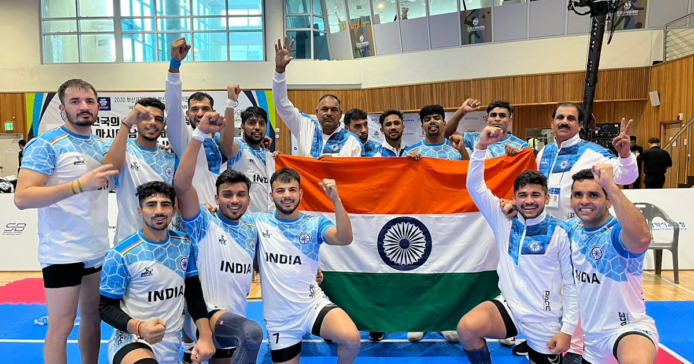

Kabaddi is basically a combative sport, with seven players on each side; played for a period of 40 minutes with a 5 minutes break (20-5-20). The core idea of the game is to score points by raiding into the opponent’s court and touching as many defense players as possible without getting caught on a single breath.One player, chanting Kabaddi!!! Kabaddi!!!! Kabaddi!!!! Charges into the opponent court and try to touch the opponent closest to him, while the seven opponents make maneuvers to catch the attacker. This is Kabaddi, the match of one against seven, known as the game of struggle.The players on the defensive side are called “Antis” while the player of the offence is called the “Raider”. The attack in Kabaddi is known as a ‘Raid’. The antis touched by the raider during the attack are declared ‘out’ if they do not succeed in catching the raider before he returns to home court. These players can resume play only when their side scores points against the opposite side during their raiding turn or if the remaining players succeed in catching the opponent’s raider.
It is popular in the Indian subcontinent and other surrounding Asian countries. Although accounts of kabaddi appear in the histories of ancient India, the game was popularised as a competitive sport in the 20th century. It is the national sport of Bangladesh.[3] It is the second most popular and viewed sport in India after cricket.[2][4] It is the state game of the Indian states of Andhra Pradesh, Bihar, Chhattisgarh, Haryana, Karnataka, Kerala, Maharashtra, Odisha, Punjab, Tamil Nadu, Telangana, and Uttar Pradesh.[5]There are two major disciplines: "Punjabi kabaddi", also called "circle style", comprises traditional forms of the sport that are played on a circular field outdoors, and the "standard style", on a rectangular court indoors, is played in major professional leagues and international competitions such as the Asian Games.This game is known by numerous names in different parts of the Indian subcontinent, such as: kabaddi or chedugudu in Andhra Pradesh and Telangana; kabaddi in Maharashtra, Karnataka and Kerala; kabaddi, komonti or ha-du-du in West Bengal and Bangladesh; baibalaa in Maldives, kauddi or kabaddi in the Punjab region; hu-tu-tu in Western India, ha-do-do in Eastern India; chadakudu in South India; kapardi in Nepal; kabadi or sadugudu in Tamil Nadu; and chakgudu in Sri Lanka.[6]
